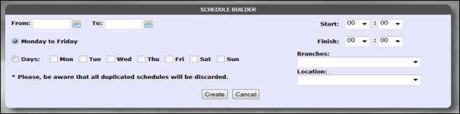

A User has to select the from date from the From text box and the finishing date from the To textbox. After this, the User has various options to select day. If the User works consecutively Monday to Friday, the User can select Monday-Friday radio button. Otherwise, the User has options to select particular day from the Days radio button. Or, if the User had the same schedule as of the previous month, the User can select “Copy from Last Month” radio button. The start time and finish time are required fields and the User can create schedule by selecting Branch from the branch drop-down list and location from the location drop-down list. Then the User must press the “Create” Button.

Created with the Personal Edition of HelpNDoc: Easily create Web Help sites